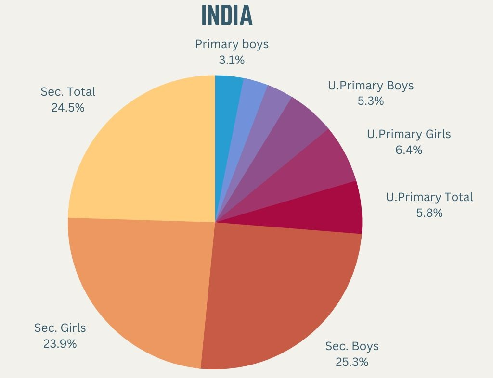
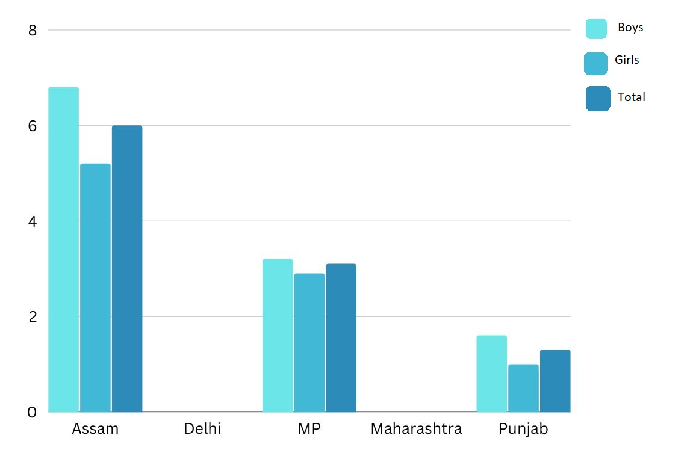
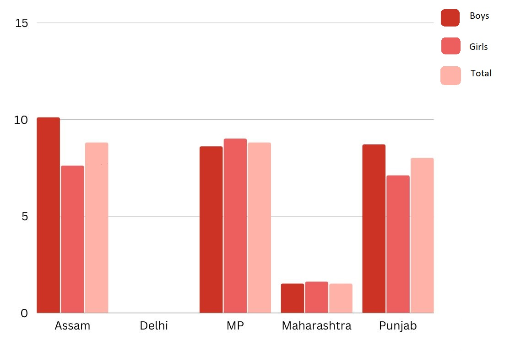

Statistics:
Dropout rates of India age-wise and gender-wise:

Dropout rates of Primary section (Grade 1 to 5):

Dropout rates of Upper Primary section (Grade 6 to 8):

Dropout rates of Secondary section (Grade 9 to 10):

Dropout rates of 10 districts of Maharashtra:
| District Names | Elementary Level ( I-VIII ) | Secondary Level ( IX-X ) |
|---|---|---|
| Mumbai(Suburban) | 18.4 | 53.01 |
| Nagpur | 0.5 | 11.19 |
| Pune | - | 12.88 |
| Jalgaon | 0.6 | 20.07 |
| Palghar | 1.0 | 18.58 |
| Thane | 0.2 | 17.67 |
| Solapur | 0.3 | 15.93 |
| Nashik | 0.3 | 18.84 |
| Amravati | 0.1 | 15.44 |
| Ratnagiri | 0.7 | 14.52 |
Why do children dropout of the schools?
1. Poverty Accessibility and Availability:
Poverty, accessibility and availability are the major reasons of school dropouts in India. For example, most of the Government schools in the coastal areas of Kerala are being used as reliefcampsduring monsoon season. Some people have been living in these camps (schools) for last three years. Government has not made any arrangements to settle these people. Therefore there is no place for the students to study
2. Lack of Interest:
Lack of interest is caused by their lack of attention in whatever is being taught. It is not that such students do not try. They do try as and when they are forced and pressurized to. It is then that these students prefer going the otherway. They prefer dropping out of their school because once and for all they decide that whatever is being taught there barely intrigues them.
3. Excessive academic pressure from school and parents:
Many students leave the schools because of the inability to deal with the academic pressure and debilitating anxiety. Many parents have high expectations about their children they never consider the abilities and interests of the children.Some of them end up in alcoholism and substance abuse.
4. The family background of the students:
There is often a clash between the family values and those of the school. Frequently, their parents have dropped out of school themselves. The students come from families from low socio-economic backgrounds, where there are many other children. Older children often have to go to work in order to supply the family with much-needed funds for basic family needs or need to stay home to take care of younger siblings so that their parents can work. Many children are products of divorce, separation or, sometimes, family violence.
5. The community they belong:
Many children live on the wrong side of the tracks in places where education is not valued, where drugs, gangs and violence abound. And where schools are low-performing, they often lack community and health support.
6. Menstruation amongst young girls:
A UNICEF study states that 71 per cent of adolescent girls in India remain unaware of menstruation until they get their first period, and when they do so, many drop out of school.
Other Reasons:
- • Did not get admission
- • Not safe to send girls
- • No proper school facilities for girls
- • No female teacher
- • Child marriage and Pregnancy
- • Physical and other medical problems
| Reasons | Males | Females |
|---|---|---|
| Was getting poor grades/failing school | 40.1 | 35.2 |
| Could not get along with teachers | 27.7 | 21.6 |
| Did not feel belonged there | 19.9 | 19.9 |
| Changed schools and did not like new one | 14.5 | 7.0 |
| Had to support family | 17.6 | 23 |
| Married or planned to get married | 3.0 | 11.6 |
| Got a job | 33.5 | 20.3 |